|
|
|
seagrasses
text index | photo
index
|
| Seagrasses > Family Hydrocharitaceae |
| Spoon
seagrass Halophila ovalis 'complex' Family Hydrocharitaceae updated Mar 14
Where seen? This small oval seagrass is commonly seen on many of our shores in the North and South. Sometimes, they may form lush meadows, at other places, smaller patches. The preliminary results of a transact survey of Chek Jawa suggest it is probably among the most widely distributed seagrass in the seagrass lagoon there. Spoon seagrass is found throughout the tropical Indo-West Pacific region and even in some parts of temperate Australia. This seagrass has one of the widest tolerance. It is found from shallow subtidal areas to the deepest waters where seagrasses can be found, 30m and deeper. It can tolerate areas with freshwater runoff and thus lower salinity, as well as hypersaline waters. Features: The seagrass has oval, spoon-shaped leaves and is sometimes also called 'paddleweed' or fan seagrass. It comes in a wide range of sizes (0.5-1.5cm wide and 0.5-2.5cm long) and shapes from oval, to nearly oblong or spoon-shaped. The leaf edge is smooth with no serrations, there is a vein just within the leaf margin (intramarginal vein). The leaf has obvious cross veins (4-25) and is held on a long thin stalk. It has thin, smooth, white rhizomes (underground stems) about 2mm in diameter. The leaves emerge in pairs from these rhizomes. The emerging shoot is encased in a pair of transparent scales. Sometimes confused with seaweeds that are also spoon-shaped such as the Coin seaweed (Halimeda sp.) and Fan seaweed (Avrainvillia sp.). These seaweeds don't have veins like the spoon seagrass. Coin seaweeds are also hard as they incorporate calcium in their body structure, while spoon seagrass blades are soft and flexible. Flowers and fruits: Spoon seagrass has separate male and female plants. The flowers form at the base of the shoot but may extend to above the height of the leaves. The male flower remains low. The round fruits are tiny. In Australia this seagrass is reported to flower densely with lots of seeds setting. Several species of seagrasses look very similar and are difficult to distinguish from Halophila ovalis. These include H. minor, H. ovata and H. hawaiiana. There is some uncertainty whether all these seagrasses are actually distinct species and some scientists treat them as one species called Halophila ovalis 'complex'. H. ovalis and H. minor are recorded for Singapore. Role in the habitat: This seagrass is among the favourite food of dugongs so it is also sometimes called Dugong grass. Studies suggest that Halophila ovalis can recover rapidly from grazing by dugong. The seagrass leaf provides a surface for small algae to grow on. Tiny snails graze on this algae. These in turn are eaten by larger creatures. In this way, seagrasses contribute to the rich biodiversity on the shores. Status and threats: It is listed as 'Vulnerable' on the Red List of threatened plants of Singapore. |
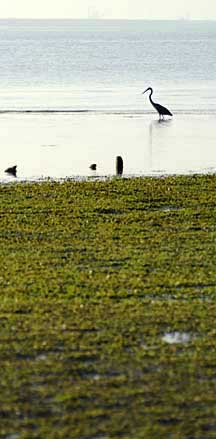 Meadow of Spoon seagrass. Chek Jawa, Jun 09 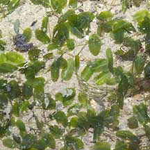 Sentosa, Jan 06 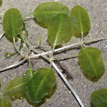 Changi, Apr 05 |
|
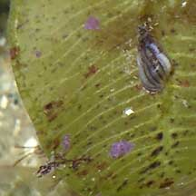 Tiny algae grow on the leaves which are eaten by tiny animals like snails. Changi, May 05 |
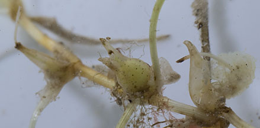 Fruits. Labrador, Nov 12 |
|
|
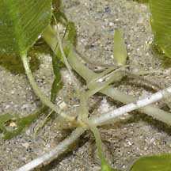 Spindly female flower of the spoon seagrass? Changi, Apr 05 |
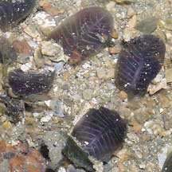 Burnt leaves. Pulau Sekudu, Jun 06 |
|
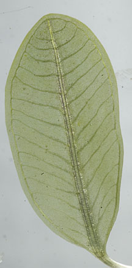 Chek Jawa, Sep 11 |
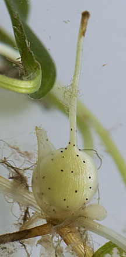 Fruit. Labrador, Nov 12 |
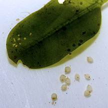 Seeds. 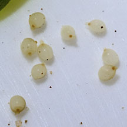 Labrador, Nov 12 |
| Spoon seagrass on Singapore shores |
| Photos of Spoon seagrass for free download from wildsingapore flickr |
| Distribution in Singapore on this wildsingapore flickr map |
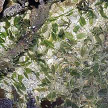 Pulau Pawai, Dec 09 |
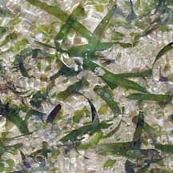 Pulau Biola, Dec 09 |
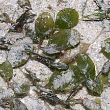 Pulau Salu, Aug 10 |
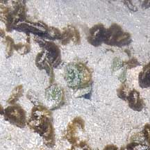 Pulau Berkas, May 10 |
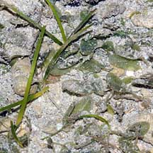 Pulau Senang, Aug 10 |
Links
References
|
|
|
|
You CAN make a difference for Singapore's seagrasses!  |